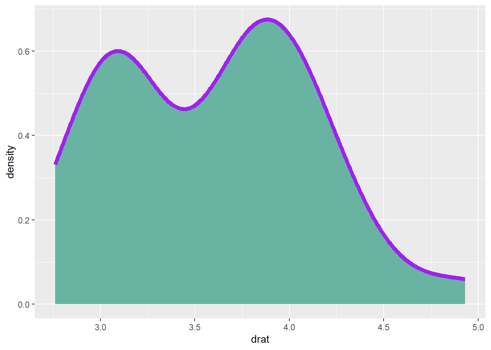
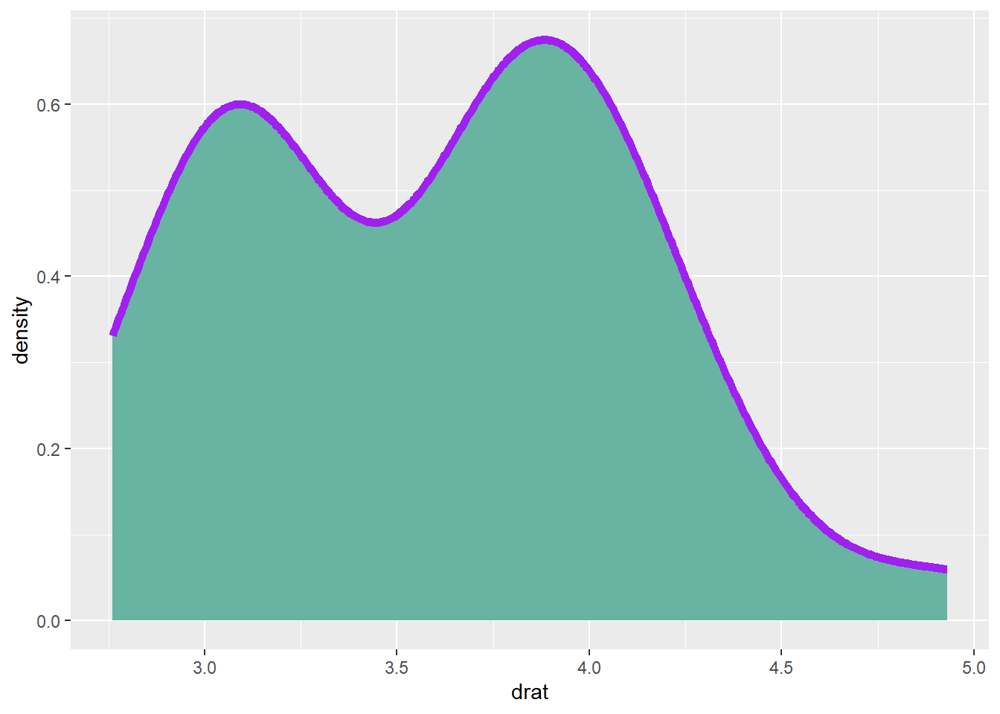
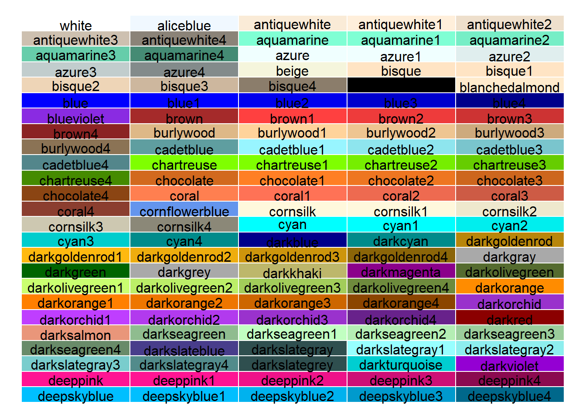
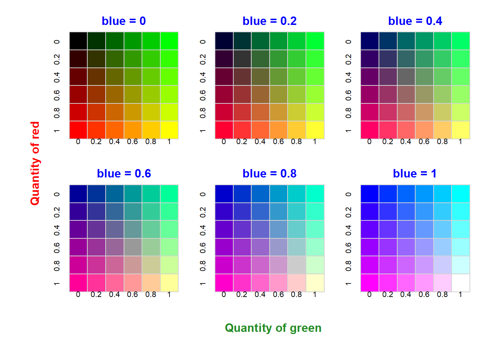
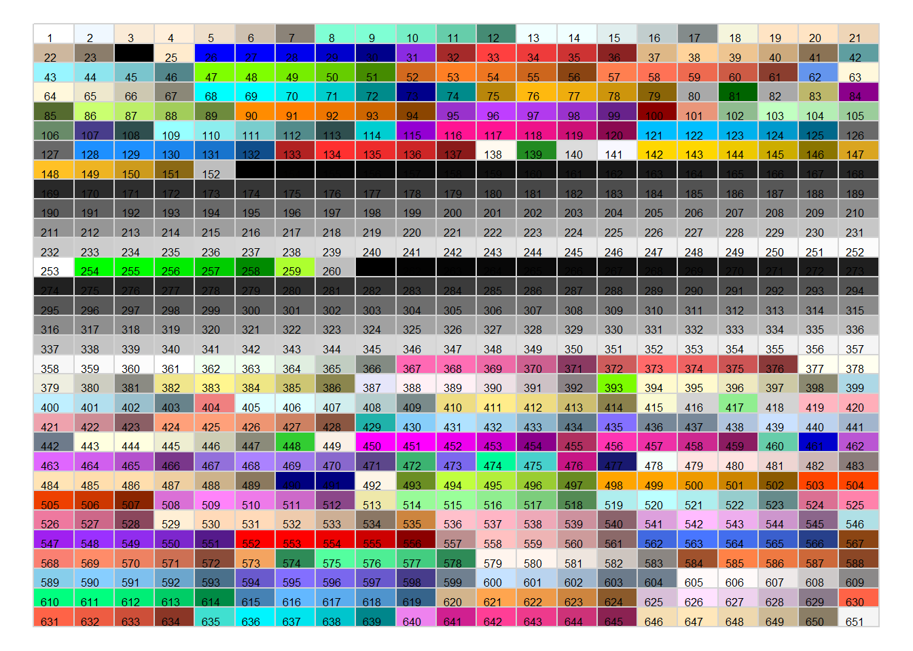
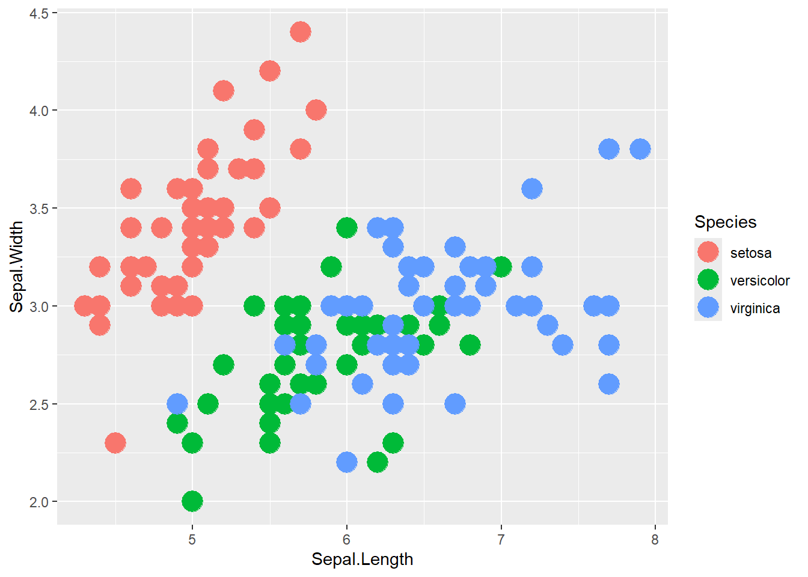

Show/Hide Code
library(ggplot2)
ggplot(mtcars, aes(x=drat)) +
geom_density(
color="purple", # 边框颜色
fill="#69b3a2", # 填充颜色
size=2
)
fill or color 设置颜色fill or colorlibrary(ggplot2)
ggplot(mtcars, aes(x=drat)) +
geom_density(
color="purple", # 边框颜色
fill="#69b3a2", # 填充颜色
size=2
)
fill or color 设置颜色选择颜色的 5 种方法
最常见的方法是直接调用颜色的名称。
R 提供了大约 657 种颜色名称。可以使用 colors() 来获取所有这些颜色名称。
par(mar=c(0,0,0,0)) # 去掉图的边距
plot(0, 0, type = "n",
xlim = c(0, 1), ylim = c(0, 1),
axes = FALSE, xlab = "", ylab = "") # 创建一个空图
line <- 25 # 行数
col <- 5 # 列数
rect(
rep((0:(col - 1)/col),line) ,
sort(rep((0:(line - 1)/line),col),decreasing=T),
rep((1:col/col),line) ,
sort(rep((1:line/line),col),decreasing=T),
border = "white" ,
col=colors()[seq(1,line*col)]) # 填充颜色
# 颜色名称
text(
rep((0:(col - 1)/col),line)+0.1 ,
sort(rep((0:(line - 1)/line),col),decreasing=T)+0.015 ,
colors()[seq(1,line*col)] ,
cex=1)
colors() 获取所有颜色名称rgb() 函数允许使用红色、绿色和蓝色的量来构建颜色。
还有一个附加参数可以设置透明度。所有参数的值都在 0 到 1 之间。
rgb(red, green, blue, alpha)
par(
mfrow = c(2, 3), # 2 行 3 列
mar = c(2, 2, 2, 1), # 图的边距
oma = c(4, 5, 1, 1)
) # 图的外边距
line <- 6 # 行数
col <- 6 # 列数
red <- sort(rep(c(0, 0.2, 0.4, 0.6, 0.8, 1), col)) # 红色
green <- rep(c(0, 0.2, 0.4, 0.6, 0.8, 1), line) # 绿色
num <- 0 # 计数器
for (i in seq(0, 1, 0.2)) {
num <- num + 1 # 计数器加 1
plot(
0,
0,
type = "n",
xlim = c(0, 1),
ylim = c(0, 1),
axes = FALSE,
xlab = "",
ylab = ""
)
colors <- rgb(red, green, i, 1) # 构建颜色
mtext(
paste("blue = ", i, sep = ""),
side = 3,
line = 0.15,
col = "blue",
font = 2
)
rect( # 绘制矩形
rep((0:(col - 1) / col), line),
sort(rep((0:(line - 1) / line), col), decreasing = T),
rep((1:col / col), line),
sort(rep((1:line / line), col), decreasing = T),
border = "light gray",
col = colors
)
axis( # 绘制坐标轴
2,
at = c(17, 14, 11, 8, 5, 2) / 18 - 0.035,
labels = c("0", "0.2", "0.4", "0.6", "0.8", "1"),
tick = F,
lty = 6,
pos = 0.01
)
axis( # 绘制坐标轴
3,
at = c(1.5, 3.5, 5.5, 7.5, 9.5, 11.5) / 12 - 0.045,
labels = c("0", "0.2", "0.4", "0.6", "0.8", "1"),
tick = F,
pos = -0.15
)
}
mtext("Quantity of red", # 添加文本
side = 2,
line = 34,
col = "red",
font = 2,
at = 1.2
)
mtext(
"Quantity of green", # 添加文本
side = 1,
line = 3,
at = -0.8,
col = "forestgreen",
font = 2
)
rgb() 函数允许使用红色、绿色和蓝色的量来构建颜色# 恢复布局
par(mfrow = c(1, 1))也可以通过函数的编号来调用。例如，内置颜色的第 143 个，可以使用 colors()[143]。
par(mar = c(0, 0, 0, 0)) # 去掉图的边距
plot( # 创建一个空图
0,
0,
type = "n",
xlim = c(0, 1),
ylim = c(0, 1),
axes = FALSE,
xlab = "",
ylab = ""
)
# 参数
line <- 31 # 行数
col <- 21 # 列数
# 矩形
rect(
rep((0:(col - 1) / col), line),
sort(rep((0:(line - 1) / line), col), decreasing = T),
rep((1:col / col), line),
sort(rep((1:line / line), col), decreasing = T),
border = "light gray",
col = colors()[seq(1, 651)]
)
# 文本
text(
rep((0:(col - 1) / col), line) + 0.02,
sort(rep((0:(line - 1) / line), col), decreasing = T) + 0.01,
seq(1, 651),
cex = 0.5
)
colors()[number] 调用内置颜色我们都很熟悉， hex 格式是 # 开头，后面跟着 6 个十六进制数字。
#000000 表示黑色；#FFFFFF 表示白色。
还可以使用调色板函数来设置颜色。
library(ggplot2)
ggplot(iris, aes(x = Sepal.Length, y = Sepal.Width, color = Species)) +
geom_point(size = 6)